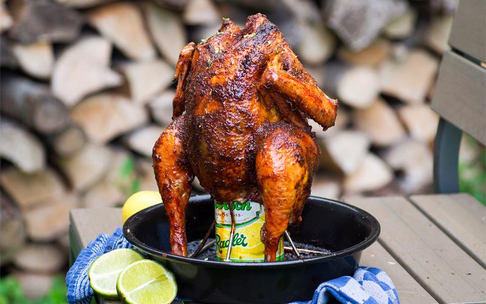

Drunken Chicken

Description:
Drunken Chicken is a dish found with many variations in taverna in Greece and Cyprus. Served as a meze or a main course, the basic recipe consists of chicken breasts, marinated in alcohol, sautéed, then braised in the marinade.
Ingredients
- Chicken
- Beer
- Italian Dressing
- Garlic Powder
- Mustard
- Onion Powder
- Black Pepper
Steps
- A simple beer-can grilled chicken that adds Italian dressing to the mix.
- Give the cook half of the beer, then fill the can back up with Italian dressing.
- The can will be the stand for the chicken, keeping the bird upright so it cooks uniformly.
- coating the chicken with the mustard and seasoned properly grill it for 2 hours before serving.